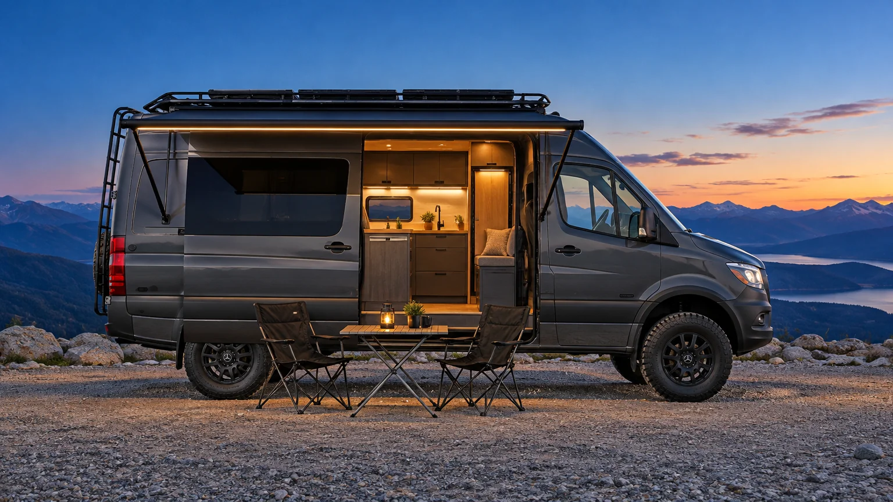

Sprinter 4×4
Концепт · автодом на двоих
Для свободных душой
Полностью автономный дом на двоих для долгих путешествий — в том числе по бездорожью и вдали от кемпингов.
Экстерьер
Снаружи ничего лишнего
Сдержанный премиальный экспедиционный фургон без пластиковых надстроек. Матовый светлый кузов — песочный или серый.
Проходимость
Чёрные диски, резина AT, увеличенный клиренс, защита картера и баков.
3,5–4 м
Маркиза 3,5–4 м
По правому борту над сдвижной дверью, с LED-подсветкой. Под ней — складные стол и стулья.
Корма
Усиленный задний бампер с запасным колесом, лестница на крышу.
Крыша
Силовой багажник на всю длину с солнечными панелями.
Сцена 01 · Снаружи